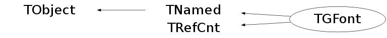

class TGFont: public TNamed, public TRefCnt
TGFont and TGFontPool Encapsulate fonts used in the GUI system. TGFontPool provides a pool of fonts. TGTextLayout is used to keep track of string measurement information when using the text layout facilities. It can be displayed with respect to any origin.
Function Members (Methods)
public:
| virtual | ~TGFont() |
| void | TObject::AbstractMethod(const char* method) const |
| void | TRefCnt::AddReference() |
| virtual void | TObject::AppendPad(Option_t* option = "") |
| virtual void | TObject::Browse(TBrowser* b) |
| static TClass* | Class() |
| virtual const char* | TObject::ClassName() const |
| virtual void | TNamed::Clear(Option_t* option = "") |
| virtual TObject* | TNamed::Clone(const char* newname = "") const |
| virtual Int_t | TNamed::Compare(const TObject* obj) const |
| TGTextLayout* | ComputeTextLayout(const char* string, Int_t numChars, Int_t wrapLength, Int_t justify, Int_t flags, UInt_t* width, UInt_t* height) const |
| virtual void | TNamed::Copy(TObject& named) const |
| virtual void | TObject::Delete(Option_t* option = "")MENU |
| virtual Int_t | TObject::DistancetoPrimitive(Int_t px, Int_t py) |
| virtual void | TObject::Draw(Option_t* option = "") |
| void | DrawChars(Drawable_t dst, GContext_t gc, const char* source, Int_t numChars, Int_t x, Int_t y) const |
| void | DrawCharsExp(Drawable_t dst, GContext_t gc, const char* source, Int_t numChars, Int_t x, Int_t y) const |
| virtual void | TObject::DrawClass() constMENU |
| virtual TObject* | TObject::DrawClone(Option_t* option = "") constMENU |
| virtual void | TObject::Dump() constMENU |
| virtual void | TObject::Error(const char* method, const char* msgfmt) const |
| virtual void | TObject::Execute(const char* method, const char* params, Int_t* error = 0) |
| virtual void | TObject::Execute(TMethod* method, TObjArray* params, Int_t* error = 0) |
| virtual void | TObject::ExecuteEvent(Int_t event, Int_t px, Int_t py) |
| virtual void | TObject::Fatal(const char* method, const char* msgfmt) const |
| virtual void | TNamed::FillBuffer(char*& buffer) |
| virtual TObject* | TObject::FindObject(const char* name) const |
| virtual TObject* | TObject::FindObject(const TObject* obj) const |
| virtual Option_t* | TObject::GetDrawOption() const |
| static Long_t | TObject::GetDtorOnly() |
| FontAttributes_t | GetFontAttributes() const |
| FontH_t | GetFontHandle() const |
| void | GetFontMetrics(FontMetrics_t* m) const |
| FontStruct_t | GetFontStruct() const |
| virtual const char* | TObject::GetIconName() const |
| virtual const char* | TNamed::GetName() const |
| virtual char* | TObject::GetObjectInfo(Int_t px, Int_t py) const |
| static Bool_t | TObject::GetObjectStat() |
| virtual Option_t* | TObject::GetOption() const |
| virtual const char* | TNamed::GetTitle() const |
| virtual UInt_t | TObject::GetUniqueID() const |
| virtual Bool_t | TObject::HandleTimer(TTimer* timer) |
| virtual ULong_t | TNamed::Hash() const |
| virtual void | TObject::Info(const char* method, const char* msgfmt) const |
| virtual Bool_t | TObject::InheritsFrom(const char* classname) const |
| virtual Bool_t | TObject::InheritsFrom(const TClass* cl) const |
| virtual void | TObject::Inspect() constMENU |
| void | TObject::InvertBit(UInt_t f) |
| virtual TClass* | IsA() const |
| virtual Bool_t | TObject::IsEqual(const TObject* obj) const |
| virtual Bool_t | TObject::IsFolder() const |
| Bool_t | TObject::IsOnHeap() const |
| virtual Bool_t | TNamed::IsSortable() const |
| Bool_t | TObject::IsZombie() const |
| virtual void | TNamed::ls(Option_t* option = "") const |
| void | TObject::MayNotUse(const char* method) const |
| Int_t | MeasureChars(const char* source, Int_t numChars, Int_t maxLength, Int_t flags, Int_t* length) const |
| virtual Bool_t | TObject::Notify() |
| void | TObject::Obsolete(const char* method, const char* asOfVers, const char* removedFromVers) const |
| static void | TObject::operator delete(void* ptr) |
| static void | TObject::operator delete(void* ptr, void* vp) |
| static void | TObject::operator delete[](void* ptr) |
| static void | TObject::operator delete[](void* ptr, void* vp) |
| void* | TObject::operator new(size_t sz) |
| void* | TObject::operator new(size_t sz, void* vp) |
| void* | TObject::operator new[](size_t sz) |
| void* | TObject::operator new[](size_t sz, void* vp) |
| FontStruct_t | operator()() const |
| virtual void | TObject::Paint(Option_t* option = "") |
| virtual void | TObject::Pop() |
| Int_t | PostscriptFontName(TString* dst) const |
| virtual void | Print(Option_t* option = "") const |
| virtual Int_t | TObject::Read(const char* name) |
| virtual void | TObject::RecursiveRemove(TObject* obj) |
| UInt_t | TRefCnt::References() const |
| UInt_t | TRefCnt::RemoveReference() |
| void | TObject::ResetBit(UInt_t f) |
| virtual void | TObject::SaveAs(const char* filename = "", Option_t* option = "") constMENU |
| virtual void | SavePrimitive(ostream& out, Option_t* = "") |
| void | TObject::SetBit(UInt_t f) |
| void | TObject::SetBit(UInt_t f, Bool_t set) |
| virtual void | TObject::SetDrawOption(Option_t* option = "")MENU |
| static void | TObject::SetDtorOnly(void* obj) |
| virtual void | TNamed::SetName(const char* name)MENU |
| virtual void | TNamed::SetNameTitle(const char* name, const char* title) |
| static void | TObject::SetObjectStat(Bool_t stat) |
| void | TRefCnt::SetRefCount(UInt_t r) |
| virtual void | TNamed::SetTitle(const char* title = "")MENU |
| virtual void | TObject::SetUniqueID(UInt_t uid) |
| virtual void | ShowMembers(TMemberInspector& insp) |
| virtual Int_t | TNamed::Sizeof() const |
| virtual void | Streamer(TBuffer& b) |
| void | StreamerNVirtual(TBuffer& b) |
| virtual void | TObject::SysError(const char* method, const char* msgfmt) const |
| Bool_t | TObject::TestBit(UInt_t f) const |
| Int_t | TObject::TestBits(UInt_t f) const |
| Int_t | TextHeight() const |
| Int_t | TextWidth(const char* string, Int_t numChars = -1) const |
| void | UnderlineChars(Drawable_t dst, GContext_t gc, const char* string, Int_t x, Int_t y, Int_t firstChar, Int_t lastChar) const |
| virtual void | TObject::UseCurrentStyle() |
| virtual void | TObject::Warning(const char* method, const char* msgfmt) const |
| virtual Int_t | TObject::Write(const char* name = 0, Int_t option = 0, Int_t bufsize = 0) |
| virtual Int_t | TObject::Write(const char* name = 0, Int_t option = 0, Int_t bufsize = 0) const |
| Int_t | XTextWidth(const char* string, Int_t numChars = -1) const |
protected:
| TGFont(const char* name) | |
| TGFont(const TGFont& font) | |
| virtual void | TObject::DoError(int level, const char* location, const char* fmt, va_list va) const |
| void | TObject::MakeZombie() |
| LayoutChunk_t* | NewChunk(TGTextLayout* layout, int* maxPtr, const char* start, int numChars, int curX, int newX, int y) const |
| void | operator=(const TGFont& font) |
Data Members
public:
| enum TObject::EStatusBits { | kCanDelete | |
| kMustCleanup | ||
| kObjInCanvas | ||
| kIsReferenced | ||
| kHasUUID | ||
| kCannotPick | ||
| kNoContextMenu | ||
| kInvalidObject | ||
| }; | ||
| enum TObject::[unnamed] { | kIsOnHeap | |
| kNotDeleted | ||
| kZombie | ||
| kBitMask | ||
| kSingleKey | ||
| kOverwrite | ||
| kWriteDelete | ||
| }; | ||
| enum TRefCnt::EReferenceFlag { | kStaticInit | |
| }; |
protected:
| TString | TNamed::fName | object identifier |
| UInt_t | TRefCnt::fRefs | (1 less than) number of references |
| TString | TNamed::fTitle | object title |
private:
| Int_t | fBarHeight | Height of underline or overstrike bar |
| FontAttributes_t | fFA | Actual font attributes obtained when the font was created |
| FontMetrics_t | fFM | Cached font metrics |
| FontH_t | fFontH | Font handle (derived from fontstruct) |
| FontStruct_t | fFontStruct | Low level graphics fontstruct |
| TObjString* | fNamedHash | Pointer to the named object TGFont was based on |
| Int_t | fTabWidth | Width of tabs in this font (pixels). |
| char | fTypes[256] | Array giving types of all characters in |
| Int_t | fUnderlineHeight | Height of underline bar (used for drawing |
| Int_t | fUnderlinePos | Offset from baseline to origin of underline bar |
| Int_t | fWidths[256] | Array giving widths of all possible characters in the font. |
Class Charts
{kind=link}
{kind=link}
{kind=link}
{kind=link}

Function documentation
Int_t PostscriptFontName(TString* dst) const
Return the name of the corresponding Postscript font for this TGFont. The return value is the pointsize of the TGFont. The name of the Postscript font is appended to ds. If the font does not exist on the printer, the print job will fail at print time. Given a "reasonable" Postscript printer, the following TGFont font families should print correctly: Avant Garde, Arial, Bookman, Courier, Courier New, Geneva, Helvetica, Monaco, New Century Schoolbook, New York, Palatino, Symbol, Times, Times New Roman, Zapf Chancery, and Zapf Dingbats. Any other TGFont font families may not print correctly because the computed Postscript font name may be incorrect. dst -- Pointer to an initialized TString object to which the name of the Postscript font that corresponds to the font will be appended.
Int_t MeasureChars(const char* source, Int_t numChars, Int_t maxLength, Int_t flags, Int_t* length) const
Determine the number of characters from the string that will fit in the given horizontal span. The measurement is done under the assumption that DrawChars() will be used to actually display the characters. The return value is the number of characters from source that fit into the span that extends from 0 to maxLength. *length is filled with the x-coordinate of the right edge of the last character that did fit. source -- Characters to be displayed. Need not be '\0' terminated. numChars -- Maximum number of characters to consider from source string. maxLength -- If > 0, maxLength specifies the longest permissible line length; don't consider any character that would cross this x-position. If <= 0, then line length is unbounded and the flags argument is ignored. flags -- Various flag bits OR-ed together: TEXT_PARTIAL_OK means include the last char which only partially fit on this line. TEXT_WHOLE_WORDS means stop on a word boundary, if possible. TEXT_AT_LEAST_ONE means return at least one character even if no characters fit. *length -- Filled with x-location just after the terminating character.
Int_t TextWidth(const char* string, Int_t numChars = -1) const
A wrapper function for the more complicated interface of MeasureChars. Computes how much space the given simple string needs. The return value is the width (in pixels) of the given string. string -- String whose width will be computed. numChars -- Number of characters to consider from string, or < 0 for strlen().
void UnderlineChars(Drawable_t dst, GContext_t gc, const char* string, Int_t x, Int_t y, Int_t firstChar, Int_t lastChar) const
This procedure draws an underline for a given range of characters in a given string. It doesn't draw the characters (which are assumed to have been displayed previously); it just draws the underline. This procedure would mainly be used to quickly underline a few characters without having to construct an underlined font. To produce properly underlined text, the appropriate underlined font should be constructed and used. dst -- Window or pixmap in which to draw. gc -- Graphics context for actually drawing line. string -- String containing characters to be underlined or overstruck. x, y -- Coordinates at which first character of string is drawn. firstChar -- Index of first character. lastChar -- Index of one after the last character.
TGTextLayout * ComputeTextLayout(const char* string, Int_t numChars, Int_t wrapLength, Int_t justify, Int_t flags, UInt_t* width, UInt_t* height) const
Computes the amount of screen space needed to display a multi-line, justified string of text. Records all the measurements that were done to determine to size and positioning of the individual lines of text; this information can be used by the TGTextLayout::DrawText() procedure to display the text quickly (without remeasuring it). This procedure is useful for simple widgets that want to display single-font, multi-line text and want TGFont to handle the details. The return value is a TGTextLayout token that holds the measurement information for the given string. The token is only valid for the given string. If the string is freed, the token is no longer valid and must also be deleted. The dimensions of the screen area needed to display the text are stored in *width and *height. string -- String whose dimensions are to be computed. numChars -- Number of characters to consider from string, or < 0 for strlen(). wrapLength -- Longest permissible line length, in pixels. <= 0 means no automatic wrapping: just let lines get as long as needed. justify -- How to justify lines. flags -- Flag bits OR-ed together. kTextIgnoreTabs means that tab characters should not be expanded. kTextIgnoreNewlines means that newline characters should not cause a line break. width -- Filled with width of string. height -- Filled with height of string.
LayoutChunk_t * NewChunk(TGTextLayout* layout, int* maxPtr, const char* start, int numChars, int curX, int newX, int y) const
Helper function for ComputeTextLayout(). Encapsulates a measured set of characters in a chunk that can be quickly drawn. Returns a pointer to the new chunk in the text layout. The text layout is reallocated to hold more chunks as necessary. Currently, ComputeTextLayout() stores contiguous ranges of "normal" characters in a chunk, along with individual tab and newline chars in their own chunks. All characters in the text layout are accounted for.
void DrawCharsExp(Drawable_t dst, GContext_t gc, const char* source, Int_t numChars, Int_t x, Int_t y) const
Draw a string of characters on the screen. DrawCharsExp() expands control characters that occur in the string to \X or \xXX sequences. DrawChars() just draws the strings. dst -- Window or pixmap in which to draw. gc -- Graphics context for drawing characters. source -- Characters to be displayed. Need not be'\0' terminated. For DrawChars(), all meta-characters (tabs, control characters, and newlines) should be stripped out of the string that is passed to this function. If they are not stripped out, they will be displayed as regular printing characters. numChars -- Number of characters in string. x, y -- Coordinates at which to place origin of string when drawing.
void DrawChars(Drawable_t dst, GContext_t gc, const char* source, Int_t numChars, Int_t x, Int_t y) const
Perform a quick sanity check to ensure we won't overflow the X coordinate space.
void SavePrimitive(ostream& out, Option_t* = "")
Save the used font as a C++ statement(s) on output stream out.
FontAttributes_t& operator=(const TGFont& font)